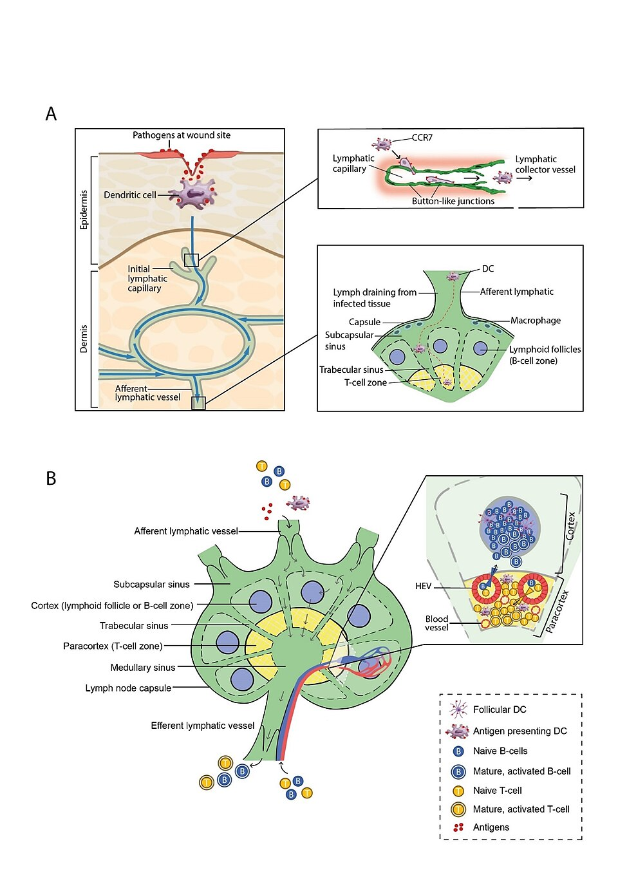

Immunity comes in four flavors, sorted by who makes the antibodies (you = active, someone else = passive) and how you got exposed (nature or medicine). Tap a box.
Active · Natural
Types of immunityactive/passive · natural/artificial
📷 Reference image
A real labeled figure to compare with the interactive above.

Types of Immunity — SGUL lymres, CC BY-SA 4.0 (via Wikimedia Commons)